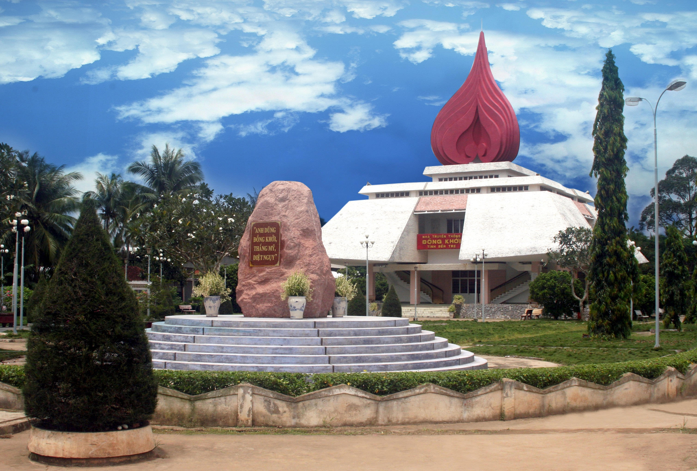

Giới Thiệu Khu Di Tích
Khu di tích lịch sử Đồng Khởi tọa lạc tại xã Định Thủy, huyện Mỏ Cày Nam, tỉnh Bến Tre – vùng đất được mệnh danh là "quê hương Đồng Khởi". Đây là một trong những khu di tích cách mạng tiêu biểu nhất của miền Nam Việt Nam, được xếp hạng Di tích Quốc gia đặc biệt.
Lịch Sử Hình Thành
Vào ngày 17 tháng 1 năm 1960, nhân dân các xã Định Thủy, Phước Hiệp và Bình Khánh (huyện Mỏ Cày) đã đồng loạt nổi dậy phá vỡ bộ máy kìm kẹp của địch. Cuộc nổi dậy lan rộng như ngọn lửa ra khắp tỉnh Bến Tre và sau đó toàn miền Nam, trở thành phong trào Đồng Khởi lịch sử.
Phong trào Đồng Khởi gắn liền với vai trò lãnh đạo của đồng chí Nguyễn Thị Định, một trong những cán bộ chủ chốt của cách mạng Bến Tre. Bà sau này được phong hàm Thiếu tướng, là nữ tướng đầu tiên của Quân đội Nhân dân Việt Nam.
Các Hạng Mục Trong Khu Di Tích
Khu di tích hiện bao gồm nhiều công trình mang giá trị lịch sử và văn hóa:
- Nhà trưng bày hiện vật lịch sử phong trào Đồng Khởi
- Tượng đài chiến thắng Đồng Khởi
- Nhà lưu niệm bà Nguyễn Thị Định
- Khu tái hiện cảnh sinh hoạt của người dân trong kháng chiến
- Vườn cây lưu niệm và khu nghỉ chân cho du khách
Hình Ảnh Khu Di Tích



Giá Trị Di Sản
Khu di tích không chỉ là nơi ghi dấu sự kiện lịch sử hào hùng mà còn là địa chỉ giáo dục truyền thống cách mạng cho các thế hệ trẻ. Hàng năm, khu di tích thu hút đông đảo du khách, học sinh, sinh viên và các đoàn nghiên cứu đến tham quan, tìm hiểu lịch sử.
Hướng Dẫn Tham Quan
| Thông tin | Chi tiết |
|---|---|
| Địa chỉ | Xã Định Thủy, huyện Mỏ Cày Nam, tỉnh Bến Tre |
| Giờ mở cửa | 7:00 – 17:00 (Tất cả các ngày trong tuần) |
| Vé tham quan | Miễn phí |
| Phương tiện di chuyển | Xe máy, ô tô, xe khách tuyến Bến Tre – Mỏ Cày |